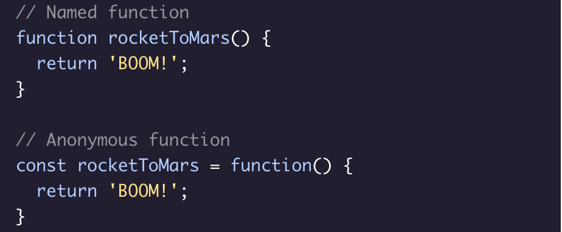

Arrow Functions (ES6)

Arrow function expressions were introduced in ES6. These expressions are clean and concise. The syntax for an arrow function expression does not require the function keyword and uses a fat arrow => to separate the parameter(s) from the body. There are several variations of arrow functions: - Arrow functions with a single parameter do not require () around the parameter list., - Arrow functions with a single expression can use the concise function body which returns the result of the expression without the return keyword.
Functions
Functions are one of the fundamental building blocks in JavaScript. A function is a reusable set of statements to perform a task or calculate a value. Functions can be passed one or more values and can return a value at the end of their execution. In order to use a function, you must define it somewhere in the scope where you wish to call it. The example code provided contains a function that takes in 2 values and returns the sum of those numbers.
Anonymous Functions
Anonymous functions in JavaScript do not have a name property. They can be defined using the function keyword, or as an arrow function. See the code example for the difference between a named function and an anonymous function.
Function Expressions
Function expressions create functions inside an expression instead of as a function declaration. They can be anonymous and/or assigned to a variable.
Function Parameters
Inputs to functions are known as parameters when a function is declared or defined. Parameters are used as variables inside the function body. When the function is called, these parameters will have the value of whatever is passed in as arguments. It is possible to define a function without parameters.

return Keyword

Functions return (pass back) values using the return keyword. return ends function execution and returns the specified value to the location where it was called. A common mistake is to forget the return keyword, in which case the function will return undefined by default.
Function Declaration
Function declarations are used to create named functions. These functions can be called using their declared name. Function declarations are built from: - The function keyword. - The function name. - An optional list of parameters separated by commas enclosed by a set of parentheses (). - A function body enclosed in a set of curly braces {}.
Calling Functions
Functions can be called, or executed, elsewhere in code using parentheses following the function name. When a function is called, the code inside its function body runs. Arguments are values passed into a function when it is called.